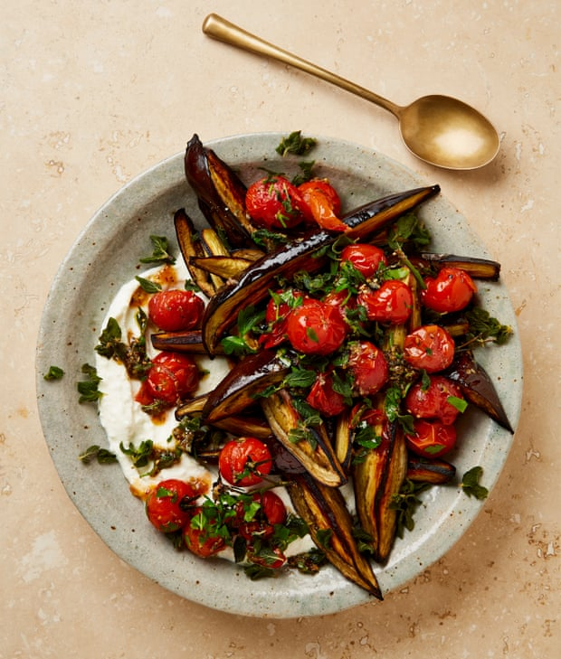

Aubergine and tomato salad with feta cream and oregano

This is a great dish for warm summer days. All the components can be made up to a day in advance and the dish assembled (at room temperature) when you’re ready to serve.
For the feta cream
Heat the oven to 240C (220C fan)/475F/gas 9. Cut off and discard the aubergine stems, then cut them in half lengthways. Cut each half into 3cm-thick wedges and put in a bowl with two tablespoons of olive oil, a half-teaspoon of salt and a good grind of pepper. Toss to coat, then lay skin side down on a large oven tray lined with greaseproof paper. Bake for 25-30 minutes, until the flesh is deeply golden, then remove and set aside.
Meanwhile, make the crisp oregano. Put the remaining 50ml oil in a small frying pan on a medium-high heat. Once hot, fry the oregano in two batches until crisp, then lift out with a slotted spoon and drain on kitchen paper. Take the pan off the heat and reserve the oregano oil.
For the tomatoes, put the oregano oil, tomatoes, garlic, za’atar, maple syrup and a quarter-teaspoon of salt on a small oven tray and bake for 12 minutes, until blistered and burst. Remove from the oven and leave to cool for five minutes.
To make the feta cream, put the feta, lemon juice and milk in the small bowl of a food processor, blitz smooth, then spoon on to a platter.
Arrange the warm aubergines on top of the feta cream. Gently mix the chopped parsley into the tomatoes, and spoon over the aubergines. Finally, scatter the oregano on top and serve warm or at room temperature.